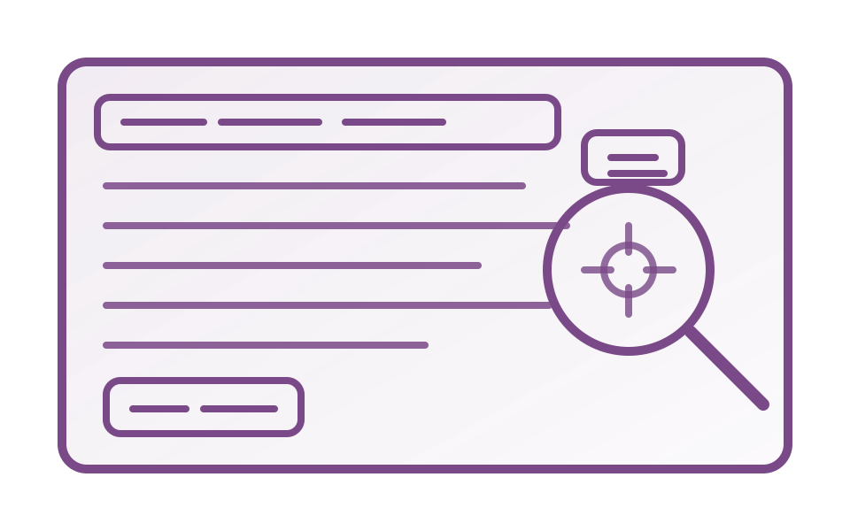
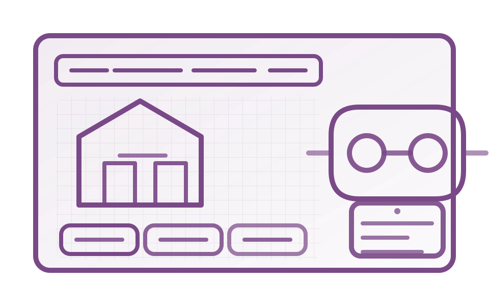
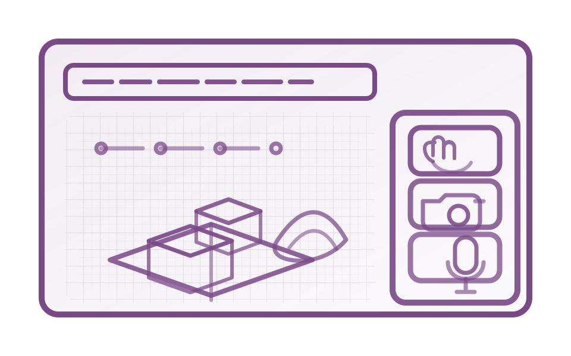
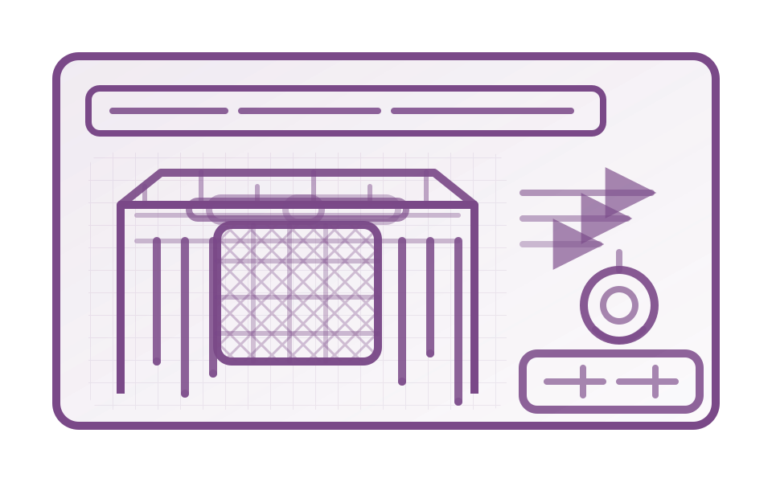
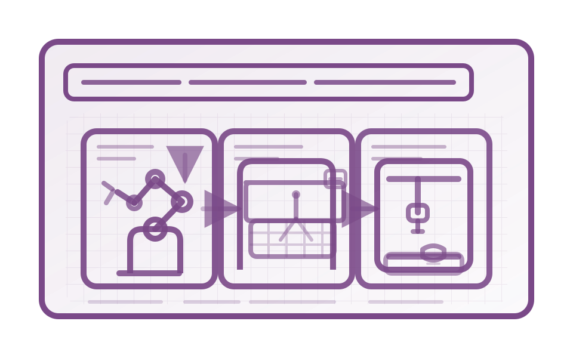
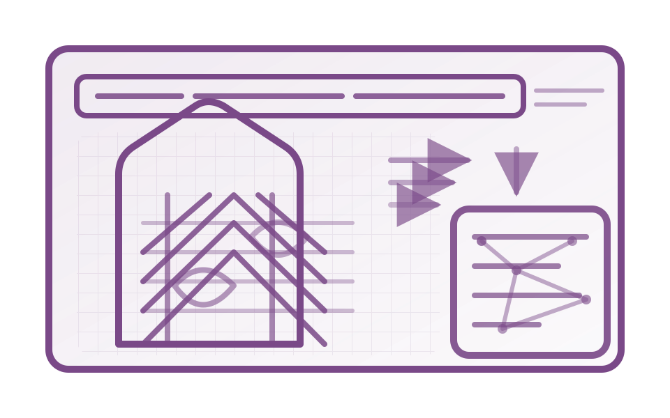

Projects
Focus
My work explores how conversational AI and immersive VR can strengthen design cognition, spatial reasoning, and decision-making during creative tasks. I also bring a background in computational design and digital fabrication.
Selected projects

StandardScout | RAG-Based Building Code Assistant
LLM-powered building-code copilot with local RAG for ADA, ABA, and GSA P-100, plus session-only PDF upload and optional web search. Text and Conversational modes are UI-only differences, and each Q&A generates a blueprint-style technical diagram with citations.
LLM • RAG PDF upload Web search Blueprint diagrams
ARTH VR learning environment
Unity-based VR learning environment for adaptive reuse design tasks, with tablet-driven placement, demolition, and editing modes plus study instrumentation.
Unity XR VR learning User studies

Architectural design serious game
Multimodal serious game in Rhino and Grasshopper using Leap Motion, computer vision, and voice interaction to support architectural design learning and self-assessment.
HCI Multimodal Serious game
OROSI interactive pavilion
Responsive light and kinetic system inspired by Iranian Orosi windows, blending computational design, and interaction.
Interactive pavilion Computational design

Fabrication projects
Selected digital fabrication projects spanning robotic workflows, CNC and laser fabrication, and full-scale prototypes.
Robotic fabrication CNC + laser Prototyping

Parametric topology optimization
Parametric workflow combining BESO topology optimization with high-rise structural system design under wind and gravity loading scenarios.
Topology optimization Parametric design StructuresTalk with my AI assistant
Hold the button to record. Release to send. The reply will play aloud and appear in the chat.